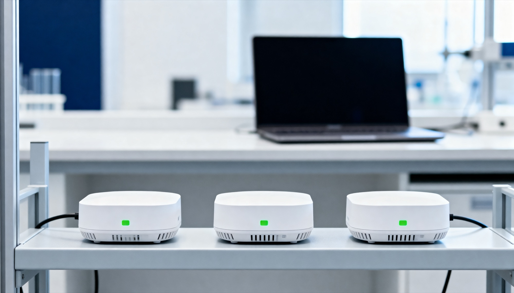

Cloud device-management platform · Centra IoT
See every device.
Manage every one.
Centra-IoT is a centralized cloud software for device management and data visualization — robust cloud, real-time monitoring, and efficient management of every deployed device, on one customizable platform.

The cloud layer that runs the fleet.
Centra-IoT is a cloud software designed to revolutionize device management and data visualization. The platform offers robust control capabilities, real-time monitoring, and efficient management of devices. Use the customizable data management platform to process and visualize data in real time.
One platform for the entire fleet — every device, every region, every deployment visible and controllable from a single dashboard.
Always up-to-date device monitoring and telemetry — surface anomalies, trigger alerts, and act on live data without delay.
Configure the platform for your deployment — dashboards, data pipelines, and alert rules shaped around how your operation runs.
Protocol-agnostic ingestion — Centra-IoT connects to any sensor or gateway using standard IoT messaging protocols, without custom bridging.
From sensor to
signed-off dashboard.
Centra-IoT uses seamless IoT protocols to collect information from sensor devices into a cloud-based platform with device management, data analysis, and data visualization. Connect your field devices once — manage everything from one place, indefinitely.
Sensor data arrives over MQTT, CoAP, or Modbus — Centra-IoT accepts it without custom adapters or per-device integration work.
Each device is onboarded with an identity and encrypted channel — authenticated before it sends a single byte of data to the cloud.
The customizable platform processes telemetry in real time and in batch — building the alerts, aggregations, and metrics your operation needs.
Real-time dashboards give every team the view they need — from a field technician checking device health to a manager reviewing KPIs.
A quick read across the platform.
Every layer shares the same cloud data model. The difference is what it does there — and which deployments it already runs in production.
Before you talk
to an engineer.
The questions teams ask us most when they're evaluating Centra-IoT for their device fleet.
Bring your fleet
into view.
Whether you're managing meters, trackers, or industrial sensors — Centra-IoT gives you one place to control, monitor, and visualize all of them.